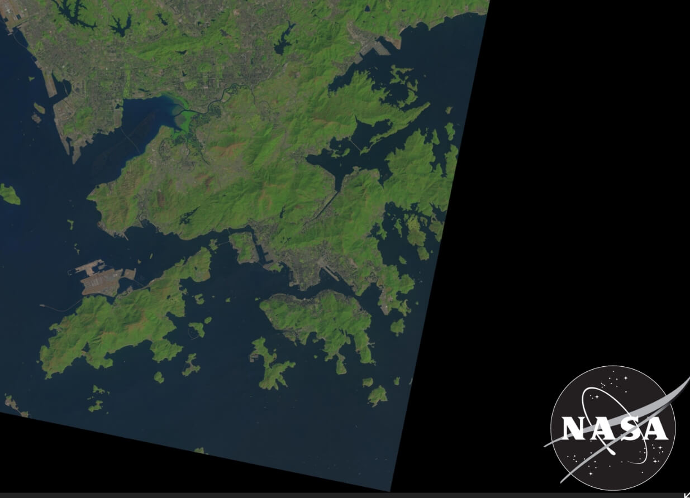
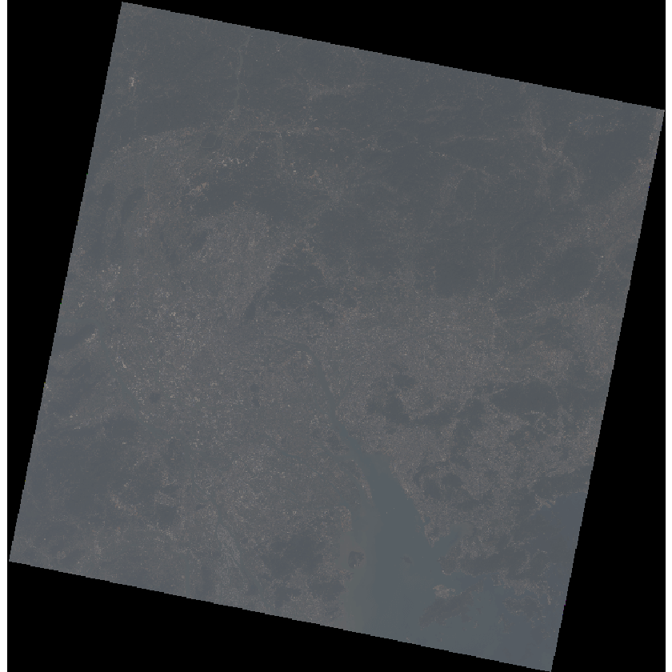
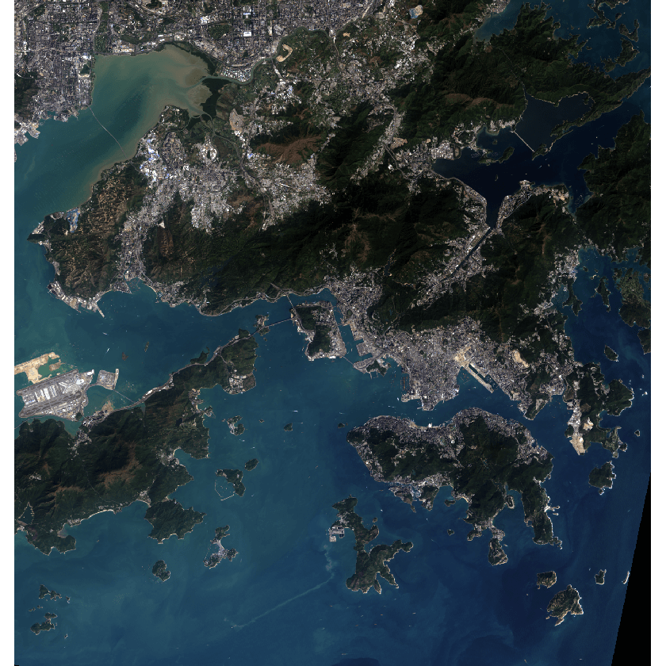
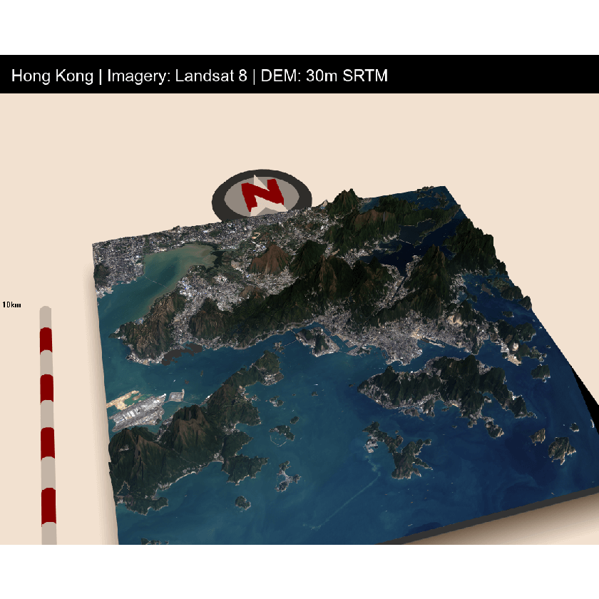

## Library
library(rayshader)
library(sp)
library(raster)
library(scales)
library(dplyr)Hong Kong Elevation map with rayshader (with R)
R
Inspired by https://www.reddit.com/r/dataisbeautiful/comments/bjp8bg/the_united_states_of_elevation_oc/. This is my little weekend project, Hong Kong elevation tile with
rayshader, powered by fastpages with Jupyter notebook! I haven’t used R in years, so I spent a lot more time than expected to finish this.
This blog is mainly reproducing the blog with different data https://www.tylermw.com/a-step-by-step-guide-to-making-3d-maps-with-satellite-imagery-in-r/. My impression is that R is doing so much better for graph compare to Python. (ggplot and now rayshader for 3D plots!)
Data
Two datasets was used for this images. Landset for RGB * LC08_L1TP_122044_20200218_20200225_01_T1.TIF
SRTM 30M resolution elevation map * n21e113.hgt * n21e114.hgt * n22e113.hgt * n22e114.hgt The USGS explorer is a very nice tool to search data.
I actually couldn’t find a Landsat image cover entire hong kong (some western part is missing). Further enhancement is needed for stitching together different images.
Setup
- conda with R Kernel
- Jupyter Notebook
- fastpages
- rayshader
Use conda install even for R Packages, I spend hours to get the environment going back and forth in Windows and Linux
elevation1 = raster::raster("../data/rayshader/HongKong/N21E113.hgt")
elevation2 = raster::raster("../data/rayshader/HongKong/N21E114.hgt")
elevation3 = raster::raster("../data/rayshader/HongKong/N22E113.hgt")
elevation4 = raster::raster("../data/rayshader/HongKong/N22E114.hgt")Let’s plot the elevation map. The whole image is green-ish because most of the area is ocean, so they are at sea-level. The orange color indicate a higher elevation.
hk_elevation = raster::merge(elevation1,elevation2, elevation3, elevation4)
height_shade(raster_to_matrix(hk_elevation)) %>%
plot_map();
Next, we are going to process the RGB image from Landsat-8 ,The raw jpeg look like this.

Satellite raw images requries some preprocessing, before they look like what we expected.
hk_r = raster::raster("../data/rayshader/HongKong/LC08_L1TP_122044_20200218_20200225_01_T1_B4.TIF")
hk_g = raster::raster("../data/rayshader/HongKong/LC08_L1TP_122044_20200218_20200225_01_T1_B3.TIF")
hk_b = raster::raster("../data/rayshader/HongKong/LC08_L1TP_122044_20200218_20200225_01_T1_B2.TIF")
hk_rbg_corrected = sqrt(raster::stack(hk_r, hk_g, hk_b))
raster::plotRGB(hk_rbg_corrected);
The image is quite hazzy, which doesn’t look like the jpeg we saw earlier. We need to improve the contrast.
# Since the RGB image and elevation map does not use the same coordinate system, we need to do some projections.
hk_elevation_utm = raster::projectRaster(hk_elevation, crs = crs(hk_r), method = "bilinear")
crs(hk_elevation_utm)
bottom_left = c(y=113.888, x=22.1365)
top_right = c(y=114.330, x=22.5493)
extent_latlong = sp::SpatialPoints(rbind(bottom_left, top_right), proj4string=sp::CRS("+proj=longlat +ellps=WGS84 +datum=WGS84"))
extent_utm = sp::spTransform(extent_latlong, raster::crs(hk_elevation_utm))
e = raster::extent(extent_utm)
eCRS arguments:
+proj=utm +zone=49 +datum=WGS84 +units=m +no_defs class : Extent
xmin : 797906.6
xmax : 842523
ymin : 2450766
ymax : 2497449 hk_rgb_cropped = raster::crop(hk_rbg_corrected, e)
elevation_cropped = raster::crop(hk_elevation_utm, e)
names(hk_rgb_cropped) = c("r","g","b")
hk_r_cropped = rayshader::raster_to_matrix(hk_rgb_cropped$r)
hk_g_cropped = rayshader::raster_to_matrix(hk_rgb_cropped$g)
hk_b_cropped = rayshader::raster_to_matrix(hk_rgb_cropped$b)
hkel_matrix = rayshader::raster_to_matrix(elevation_cropped)
hk_rgb_array = array(0,dim=c(nrow(hk_r_cropped),ncol(hk_r_cropped),3))
hk_rgb_array[,,1] = hk_r_cropped/255 #Red layer
hk_rgb_array[,,2] = hk_g_cropped/255 #Blue layer
hk_rgb_array[,,3] = hk_b_cropped/255 #Green layer
hk_rgb_array = aperm(hk_rgb_array, c(2,1,3))
plot_map(hk_rgb_array)The whole image is bright because we have some dark pixels in the corner. It’s similiar to taking images in a dark room, any light source will become a bright spot.
We can improve this by stretching the intensity. It’s really no different than how you fine tune your images on Instagram.
hk_rgb_cropped = raster::crop(hk_rbg_corrected, e)
elevation_cropped = raster::crop(hk_elevation_utm, e)
# Stretch the images
hk_rgb_cropped <-
raster::stretch(hk_rgb_cropped,
minq = .01,
maxq = .999,
)
names(hk_rgb_cropped) = c("r","g","b")
hk_r_cropped = rayshader::raster_to_matrix(hk_rgb_cropped$r)
hk_g_cropped = rayshader::raster_to_matrix(hk_rgb_cropped$g)
hk_b_cropped = rayshader::raster_to_matrix(hk_rgb_cropped$b)
hkel_matrix = rayshader::raster_to_matrix(elevation_cropped)
hk_rgb_array = array(0,dim=c(nrow(hk_r_cropped),ncol(hk_r_cropped),3))
hk_rgb_array[,,1] = hk_r_cropped/255 #Red layer
hk_rgb_array[,,2] = hk_g_cropped/255 #Blue layer
hk_rgb_array[,,3] = hk_b_cropped/255 #Green layer
hk_rgb_array = aperm(hk_rgb_array, c(2,1,3))
hk_rgb_contrast = scales::rescale(hk_rgb_array,to=c(0,1))
plot_map(hk_rgb_contrast)
Now we get a much better image
plot_3d(hk_rgb_contrast, hkel_matrix, windowsize = c(1100,900), zscale = 15, shadowdepth = -50,
zoom=0.5, phi=45,theta=-15,fov=70, background = "#F2E1D0", shadowcolor = "#523E2B")
render_scalebar(limits=c(0, 5, 10),label_unit = "km",position = "W", y=50,
scale_length = c(0.33,1))
render_compass(position = "N")
render_snapshot(title_text = "Hong Kong | Imagery: Landsat 8 | DEM: 30m SRTM",
title_bar_color = "#000000", title_color = "white", title_bar_alpha = 1,
clear=TRUE, )